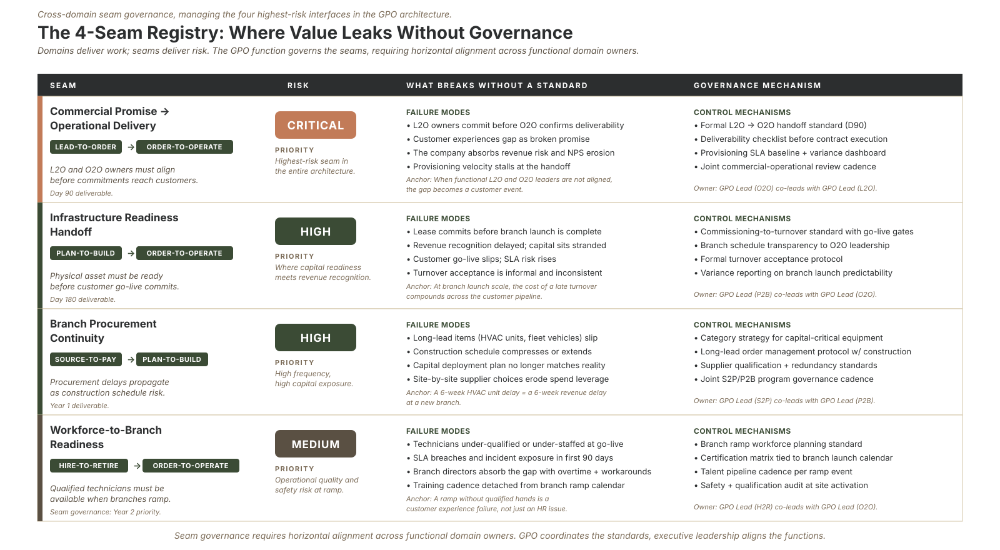

In 2025, fixed wireless install volumes at Verizon were doubling while the promise to customers stayed at two days from order to install. Nothing connected the install dates customers were being offered to the field capacity that had to meet them, so the promise would have broken before anyone saw it coming. A colleague and I built an Offered Interval KPI analysis that let the program office see the risk before the commitment broke, and the two-day promise held as volumes doubled.
The ordering side and the field side were each doing their jobs. The risk was in the handoff between them, where nobody was measuring anything.
Process improvement usually goes into making each step better: faster, cleaner and more consistent. That work matters, and there's value to recover inside almost every process (I'll come back to it before the end). But the place I'd look first is the one most teams walk past:
The seams between the boxes, where work crosses from one domain into another and nobody owns the crossing.
The work within a domain is usually done by people who are good at it, and its inefficiencies are visible to someone who owns that box. The procurement team knows procurement, the sales team knows sales, and the branch crews know how to deliver. The handoffs belong to no one, so they fail quietly.
Risk
The seams that cost the most
At Meridian Field Services, four handoffs hold most of the risk in the operating model. Each one is a place where one team's output becomes another team's problem:
- Lead-to-Order → Order-to-Operate. This is the critical one, and the same seam as the two-day promise. Sales commits to scope, timing, and price, and operations has to deliver against it. When the two aren't synchronized by a shared standard, the customer experiences the gap as a broken promise, at the moment of highest commitment. A deal that looked great on Friday becomes an operational scramble on Monday.
- Plan-to-Build → Order-to-Operate. A new branch or a new line of capacity has to be ready, and not just "open," before operations commits it to customers. When readiness and commitment aren't synchronized, the company has sold something it can't yet deliver.
- Source-to-Pay → Plan-to-Build. Procurement timing becomes construction schedule risk. A part that arrives three weeks late shows up as a missed build date instead of a procurement metric, and the build team takes the blame for a seam it didn't own.
- Hire-to-Retire → Order-to-Operate. The skilled-technician pipeline does or doesn't match the ramp of new contracts. If Meridian wins work without the certified people to staff it, the seam becomes the constraint on growth.
In every case, the failure is invisible from inside either domain. Each side did its job, and the work still failed, because the crossing had no owner.
Structure
Why seams get orphaned
Seams get orphaned because of structure. Org charts are vertical. Every leader is accountable for their own box and measured on its performance, so everyone, rationally, optimizes their box. The seam between two boxes belongs to neither budget, neither scorecard, and neither leader.
When a seam fails, the instinct is to fix the boxes on either side: tighten sales, tighten operations. Both domains can improve and the value still leaks at the handoff, because the handoff was never the target.
Governance
Governing the seams
This is where a Global Process Owner earns the title. No single domain owner is responsible for a seam, so it belongs to the function that can see the horizontal flow.
What does governing a seam look like? A seam standard is a shared, written agreement about three things:
1. What crosses the boundary (the specific output, defined the same way on both sides).
2. What "ready" means (the conditions that have to be true before the handoff is allowed to happen).
3. Who confirms it (a named person or check on each side, so the crossing is a confirmed event).
For the Lead-to-Order to Order-to-Operate seam at Meridian, that's a transition standard: a deal counts as closed only after operations has confirmed it can deliver what sales committed, on the timeline sales promised. The Offered Interval analysis did the same job for the two-day promise: it checked the commitment against the capacity before the commitment broke.
I'd build that for the two or three highest-risk seams first.
Tooling
Making the seams visible
Seams stay invisible partly because most process documentation draws the boxes and leaves the arrows between them vague. "And then it goes to operations" doesn't say what crosses, when it's ready, or who confirms it.
That's what I want instrumented in Forester, the tool I'm building alongside this series. Every handoff becomes a traceable connection in the model, with the output, the readiness condition, and the owner attached to it, instead of an assumption in someone's head. When the seams are explicit data, we can see and govern the places value leaks. A registry of seams is one of the most useful artifacts a process function can hold.

The Seam Registry: Documenting, measuring, and assigning accountability to the cross-domain boundaries where organizational handoffs occur.
Prioritization
Seams first, then the boxes
There's a trap in my own argument: looking at the seams first is different from looking only at the seams. The handoffs are where value comes back fastest, because they're orphaned and cross-cutting, and a single seam standard can pay off across the business quickly. But there is usually at least as much value inside each end-to-end process, in the ordinary forms of waste: redundant steps, rework loops, defects, and too many systems doing overlapping jobs.
I saw both on Verizon's IT asset lifecycle in 2013, where application teams waited more than seventeen weeks for infrastructure. In two weeks I decomposed the lifecycle into 400 activities across 64 systems (three levels everywhere, and down to six where the detail was needed) and found 200 TIMWOODS waste observations and 110 handoffs. The delay was in the handoffs, and the waste was inside the steps.
The redesign worked on both. Removing 43% of the critical-path steps and a third of the handoffs cut asset acquisition from over 17 weeks to under three, an 82% reduction. Five years on, a count of the server decommissions showed $61M realized against the program's $40M target. None of that was visible from the top. It appeared once the decomposition went deep enough.
The sequence I'd run is straightforward: govern the seams first for the fast, cross-cutting wins, then go domain by domain into the boxes for the deeper waste. The seams build credibility quickly, and the work inside the processes is where the larger, slower pool of value usually is. A process function that only looks at the handoffs misses most of the value.
In your organization, what's the single most expensive handoff, the one where one team's "done" becomes another team's "wait, what?" And once you've found it, how much more is hiding inside the processes on either side? I'd like to hear what comes to mind.
Next in the series: Part 4: Building the Team, on the people who do this work and why I'd build the team senior, lean, and AI-native.
Meridian Field Services is a fictional composite. The approach draws on my own research into Process Excellence and Global Process Ownership, assisted by AI research tools, and on my work at Verizon: the IT asset lifecycle decomposition and redesign (2013-2018) and the fixed wireless install interval analysis (2025).